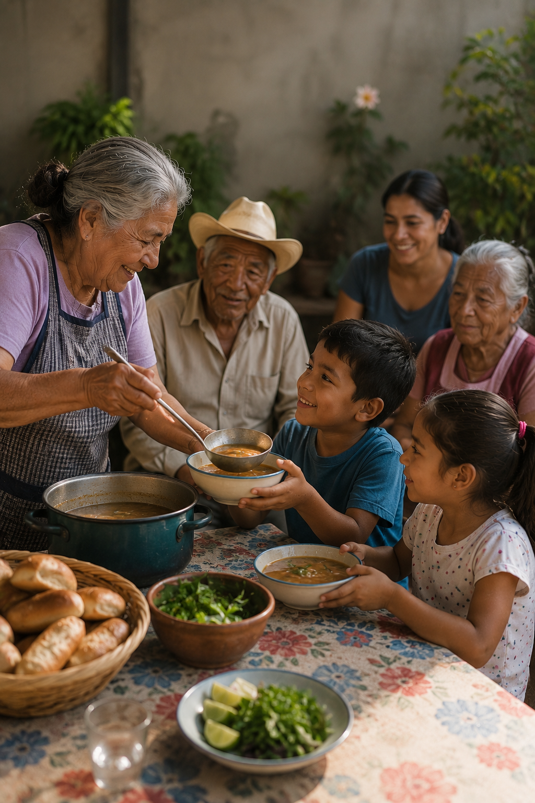

Juan
XXIII al Servicio de los Pobres
Alimentando la
Esperanza
Transformamos vidas a través de la nutrición digna. Conoce nuestros centros de atención y únete a nuestra misión en Nuevo León.
+50
Más de 50 voluntarios activos hoy
